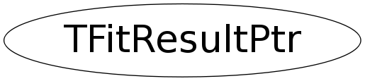

Function Members (Methods)
public:
| TFitResultPtr(int status = -1) | |
| TFitResultPtr(TFitResult* p) | |
| TFitResultPtr(const TFitResultPtr& rhs) | |
| virtual | ~TFitResultPtr() |
| static TClass* | Class() |
| TFitResult* | Get() const |
| virtual TClass* | IsA() const |
| int | operator int() const |
| TFitResult& | operator*() const |
| TFitResult* | operator->() const |
| TFitResultPtr& | operator=(const TFitResultPtr& rhs) |
| virtual void | ShowMembers(TMemberInspector& insp) |
| virtual void | Streamer(TBuffer& b) |
| void | StreamerNVirtual(TBuffer& b) |
Data Members
private:
| TFitResult* | fPointer | Smart Pointer to TFitResult class |
| int | fStatus | fit status code |
Class Charts
{kind=link}
{kind=link}
{kind=link}
{kind=link}

Function documentation
TFitResult& operator*() const
implement the de-reference operator to make the class acts as a pointer to a TFitResult assert in case the class does not contain a pointer to TFitResult
TFitResult* operator->() const
implement the -> operator to make the class acts as a pointer to a TFitResult assert in case the class does not contain a pointer to TFitResult
TFitResultPtr & operator=(const TFitResultPtr& rhs)
assignment operator if needed copy the TFitResult object and delete previous one if existing